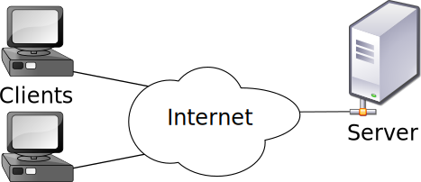

¿Dónde funciona una web?
Recordemos: Cliente-servidor

¿Dónde funciona una web?
Lenguajes
Programación en el cliente
Útil para:
- Interactivo: modificar la página (DOM) sin recargas.
- AJAX: Cargar datos remotos sin refrescar la página.
- Aplicaciones y juegos: Chrome apps, phonegap, etc. (HTML5)
- APIS: Google Maps, Facebook, Twitter, Disqus, etc.
Sin embargo si queremos que los usuarios compartan algo en nuestra web (fotos, vídeos, estados, noticias, puntuaciones), necesitaremos programación en el servidor (nuestra o de terceros).
Programación en el cliente
Tecnologías
- JavaScript
- CoffeeScript
- Dart
- TypeScript
- Native Client (Google Chrome)
- Flash
- Obsoletas: Applets de Java y ActiveX
Programación en el servidor
Útil para:
- Compartir datos y ficheros: Centraliza los datos dinámicos (usuarios, noticias, fotografías...), en bases de datos o en el sistema de ficheros.
- Sesiones y seguridad.
- Procesamiento masivo de datos.
Programación en el servidor
Características
- Lo ejecuta el servidor web: Apache, Nginx, Lighttpd...
- El resultado, normalmente HTML, se le envía al usuario (cliente).
- El código de estos lenguajes, a diferencia de JavaScript, no le llega al cliente.
Programación en el servidor
Lenguajes
- Perl
- PHP
- Python
- Ruby
- Java
- JavaScript
- .NET
Resumen
Hemos aprendido:
- Características y lenguajes de programación en el lado del cliente
- Características y lenguajes de programación en el lado del servidor